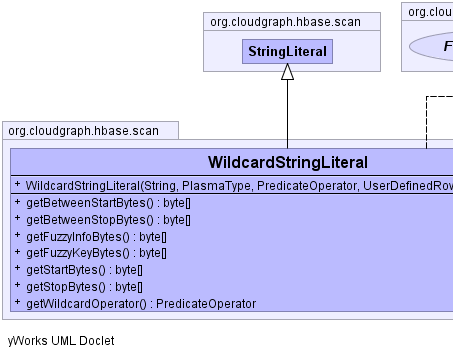
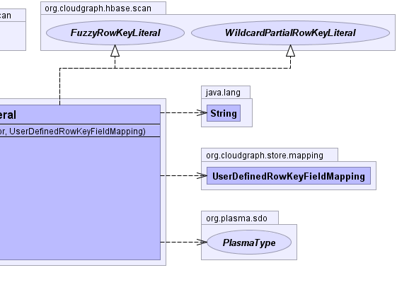

public class WildcardStringLiteral extends StringLiteral implements WildcardPartialRowKeyLiteral, FuzzyRowKeyLiteral
TableMapping,
HBaseDataConverter|  |  |
INCREMENTcharset, dataConverter, fieldConfig, HASH_INCREMENT, hashing, keySupport, literal, padding, property, relationalOperator, rootType, table| Constructor and Description |
|---|
WildcardStringLiteral(java.lang.String literal,
org.plasma.sdo.PlasmaType rootType,
org.plasma.query.model.PredicateOperator wildcardOperator,
UserDefinedRowKeyFieldMapping fieldConfig) |
| Modifier and Type | Method and Description |
|---|---|
byte[] |
getBetweenStartBytes()
Returns the "start row" bytes used under certain conditions to represent a
"wildcard" operator under an HBase partial row-key scan under the various
optionally configurable hashing, formatting and padding features.
|
byte[] |
getBetweenStopBytes()
Returns the "stop row" bytes used under certain conditions to represent a
"wildcard" operator under an HBase partial row-key scan under the various
optionally configurable hashing, formatting and padding features.
|
byte[] |
getFuzzyInfoBytes() |
byte[] |
getFuzzyKeyBytes() |
byte[] |
getStartBytes()
Returns the HBase scan "start-row" composite row-key field bytes for this
literal under the various relational, logical operator and other optionally
configurable hashing, formatting and padding features.
|
byte[] |
getStopBytes()
Returns the HBase scan "stop-row" composite row-key field bytes for this
literal under the various relational, logical operator and other optionally
configurable hashing, formatting and padding features.
|
org.plasma.query.model.PredicateOperator |
getWildcardOperator() |
getEqualsBytes, getEqualsStartBytes, getEqualsStopBytes, getGreaterThanEqualStartBytes, getGreaterThanEqualStopBytes, getGreaterThanStartBytes, getGreaterThanStopBytes, getLessThanEqualStartBytes, getLessThanEqualStopBytes, getLessThanStartBytes, getLessThanStopBytesgetContent, getFieldConfig, getRelationalOperatorclone, equals, finalize, getClass, hashCode, notify, notifyAll, toString, wait, wait, waitgetEqualsStartBytes, getEqualsStopBytes, getGreaterThanEqualStartBytes, getGreaterThanEqualStopBytes, getGreaterThanStartBytes, getGreaterThanStopBytes, getLessThanEqualStartBytes, getLessThanEqualStopBytes, getLessThanStartBytes, getLessThanStopBytespublic WildcardStringLiteral(java.lang.String literal,
org.plasma.sdo.PlasmaType rootType,
org.plasma.query.model.PredicateOperator wildcardOperator,
UserDefinedRowKeyFieldMapping fieldConfig)
public org.plasma.query.model.PredicateOperator getWildcardOperator()
public byte[] getStartBytes()
getStartBytes in interface PartialRowKeyLiteralgetStartBytes in class ScanLiteralpublic byte[] getStopBytes()
getStopBytes in interface PartialRowKeyLiteralgetStopBytes in class ScanLiteralpublic byte[] getFuzzyKeyBytes()
getFuzzyKeyBytes in interface FuzzyRowKeyLiteralgetFuzzyKeyBytes in class StringLiteralpublic byte[] getFuzzyInfoBytes()
getFuzzyInfoBytes in interface FuzzyRowKeyLiteralgetFuzzyInfoBytes in class StringLiteralpublic byte[] getBetweenStartBytes()
getBetweenStartBytes in interface WildcardPartialRowKeyLiteralpublic byte[] getBetweenStopBytes()
getBetweenStopBytes in interface WildcardPartialRowKeyLiteralCloudGraph® is a registered trademark of TerraMeta Software, Inc. Copyright © 2014 - All Rights Reserved.